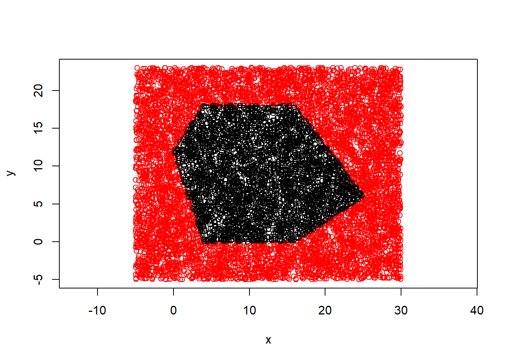

Following on from our findings in the Individual project when given the vertices of a simple polygon \((x_1, y_1),.,(x_n,y_n)\). The area \(A\) of the simple polygon can be calculated as \[A = \frac{1}{2} \sum\limits_{j=0}^n det \begin{pmatrix}x_{j} & x_{j+1} \\ y_{j} & y_{j+1}\end{pmatrix}\] With a new goal to further investigate, the areas of convex polygons and their behaviors, there were two initial tasks. Firstly, we had to construct a function in R that, given a collection of points in the plane and a convex polygon defined by its vertices, determines whether each point is inside or outside the polygon. Secondly, to write a function that extends from the idea above to obtain a Monte Carlo estimate for the area of a convex polygon and consider how good this approximation is.
We will explain what convex polygons are and what makes them unique. A convex polygon is a shape with all its interior angles being less than 180 degrees or \(\pi\) in radians with no crossing of faces. We can see that all the vertices point in an outward direction away from the interior. The opposite to a convex polygon is a concave polygon. It only takes one interior angle greater than \(\pi\) for the polygon to now be considered concave. Examples of convex polygons are the circular polygons which include irregular circular polygons as well as the entire range of regular \(n\) sided polygons with \(n\) greater than 2.
point_in_out <- function(x_1, y_1, x, y, type, plot){
xo <- x
yo <- y
if(plot == 1){
plot(x,y,type = "p", xlab="x", ylab="y", xlim=c(min(x_1)-5, max(x_1)+5), #plots test coordinates if satisfied.
ylim=c(min(y_1)-5, max(y_1)+5), asp = 1, col = "red")
}
l <- length(x_1)#effectively retrieves the number of vertices.
gradient <- 0 #initialise the variable gradient.
for(i in 1:l){ #removes all points that are above the line for the vterices that are within pi radians of the hroizontal anti clockwise.
if(i == l){
gradient <- (y_1[1]-y_1[i])/(x_1[1]-x_1[i])
} else{
gradient <- (y_1[i+1]-y_1[i])/(x_1[i+1]-x_1[i])#cycles through these vertices calculating gradient of each.
}
c <- y_1[i]- gradient*x_1[i] #find the interception with the y axis so we have the equation of a line.
if(l %% 2 == 0){
if(i < floor((l/2)+1)){
test <- ((y-gradient*x - c) <= 0) #tests each test point for if it is below the line.
} else{
test <- ((y-gradient*x - c) >= 0) #tests each test point for if it is above the line.
}
}else {
if(i <= floor((l/2)+1)){
test <- ((y-gradient*x - c) <= 0) #tests each test point for if it is below the line.
} else{
test <- ((y-gradient*x - c) >= 0) #tests each test point for if it is above the line.
}
}
for(i in 1:(length(x))){ #this then cycles through the x and coordinates and sets to point outside area to be removed.
if(test[i] == FALSE){
x[i] <- floor(max(x_1)+500)
y[i] <- floor(max(y_1) +500)
}
}
}
x2 <- x[x!= floor(max(x_1)+500)]#removes point outside of area.
y2 <- y[y!= floor(max(y_1)+500)]
area <- 0
if(plot == 1){
points(x2,y2, asp = 1)#plots the test points
polygon(x_1,y_1)#plots the polygon coordinates
}
if(type == "GRID_1"){ #depending on type of approximation used grid_1 is squared grid
area <- (max(xo)-min(xo))*(max(yo)-min(yo))*length(x2)/grid_generator(interval, x_1, y_1)[[3]]
}
if(type == "GRID_2"){#grid_2 is triangular grid
area <- ((max(xo)-(min(xo)))*((max(yo))-(min(yo)))*length(x2)/grid_generator2(interval, x_1, y_1)[[3]])
}
if(type == "Monte"){#If monte carlo method
area <- (((ceiling(max(x_1))+5)-(floor(min(x_1))-5))*((ceiling(max(y_1))+5)-(floor(min(y_1))-5)))* length(x2)/no.points
}
if(type == "Monte2"){#If monte carlo method
area <- ((radius+5)-(-radius-5))*((radius+5)-(-radius -5))*length(x2)/no.points
}
return(area)
}Looking at the above code we first outlined the function \(point\)_ \(in\)_ \(out\), which takes in 6 variables/ parameter. \(x\)_ \(1\) and \(y\)_ \(1\) are the vectors which contain the coordinates of the polygon vertices and are linked through there indexing to generate the coordinates in anti-clockwise order. \(x\) and \(y\) are the vectors which contain the coordinates of the test points which are in the same plane as the polygon. Likewise with the vertices vectors, \(x\) and \(y\) are also linked by indexing to represent coordinates. \(type\) and \(plot\) are slightly different as these are more parameters used for conditioning later in the function. The parameter \(type\) refers to the type of test points being used to approximate the area. In this instance, \(type\) can be set to account for a simple square grid, triangular grid or Monte Carlo approach but more on that later.
Following this, a quick conditional statement is implemented to check if \(plot = 1\). If this is satisfied then the test coordinates \(x\) and \(y\) are plotted against each other in red. We then define two variables, \(l\) which is the length of \(x\)_ \(1\), this essentially returns the number of vertices that the polygon has. The \(gradient\) variable is initialized to zero for the next stage.
For the iteration part of the function the loop is cycled from one to \(l\), allowing us to cycle through all the values in \(x\)_ \(1\) and \(y\)_ \(1\). Because the coordinates of the vertices are known, the simple equation of a straight line \(y = mx +c\) can be used (where \(m\) is the gradient and \(c\) is the y intercept to find the equation of the line between each consecutive vertex). This is achieved by calculating the gradient with \(m = \frac{y_{i+1}-y_i}{x_{i+1}-x_i}\); \(i\) is the indexed numbered vertices being cycled through. Once this is known, the y intercept - denoted as \(c\) - can be easily rearranged and calculated. In the code, another conditional statement is used to check if the counter \(i\) is equal to \(l\) the number of coordinates. If it does then we know that we are back to the beginning of the cycle of polygon coordinates, so need to use the first coordinate again.
Now that we have the general equation on the line through two consecutive vertices, we can start to test whether the test points are in or out of the polygon. This posed a challenge, as sometimes we will be required to remove the points above the line and other times will be required to remove points below. We wanted to make this as systematic as possible so that the user does not have to worry about whether they chose a polygon with even or odd number of vertices. A conditional statement testing if the number of vertices is divisible by two has also been put in. If so, the code moves on to another conditional statement checking if the counter \(i\) is strictly less than the \(floor(\frac{l}{2}+1)\). This effectively tests whether the vertices are above the horizontal, meaning we need to remove the points above the lines.
A vector test is then created which contains Boolean responses to whether each point from the test set is below the line. This is achieved by substitututing in the test point coordinates to the simple equation of a straight line rearranged to check if the value is less than or equal to zero: $ y-gradient*x - c 0$. If the first condition regarding the counter \(i\) is not satisfied then the else statement dictates that \(test\) should be the Boolean for points above the line, i.e. the vertices are now below the horizontal.
Moving forwards, if the number of vertices is not even then the conditional statement used is the same as before however with no strict inequality for the counter \(i \leq floor((l/2)+1))\). This non-strict in equality is very important as it allows an extra line to be included when considering points to remove above the line. In addition, you can see the layout to the content if satisfied is similar to the above conditionals.
Now that we have the \(test\) vector of Boolean responses we use another iteration loop to find the indexing of all the \(FALSE\) values in the vector and then manipulate both \(x\) and \(y\) values which correspond to this indexing to an extreme value far outside of the polygons area. \(floor(max(x_1)+500)\) is extreme enough as it takes in to account the size of the polygons max \(x\) coordinate.
Because this is all contained within the iteration loop defined earlier, all the points will be tested the same number of times as the number of vertices the polygon has. Each iteration will refine the list of coordinates, which are within the polygon until finally we have \(x\) and \(y\) being all the coordinates in the polygon with all the points that were out equal to \(floor(max(x_1)+500)\) and \(floor(max(y_1)+500)\) respectively. Making use of a method of removing values from a vector based upon a specific value, we define \(x2\) and \(y2\) as new vectors which only contain the points which are in the polygon.
At the end of the function, housekeeping is done, which relates to plotting and find the area of the poly gone. If, as we stated at the beginning of the function and \(plot = 1\) then on top of the already plotted points in red we plot directly on top the values for \(x2\) and \(y2\) in black to represent the points in the polygon as well as plotting the polygon using the polygon function.
#Area calculated from the determinant
area_calculator <- function(x,y){ #function takes in two vectors for x,y parts of coordinates
l <- length(x) #find number of coordinates
m <- matrix(c(x,y), ncol = 2, nrow = l) # creates a matric with column 1 as x and 2 as y
det <- 0 #initialize det
area <- 0 #initialize det
for(i in 1:l){ #iteration loop to cycle through the matrix calculating the determinant of the 2 by 2 matrices within.
if(i == l){
det <- det(t(matrix(c(m[i,],m[1,]), nrow = 2, ncol = 2)))
}
else {
det <- det(t(matrix(c(m[i,],m[i+1,]), nrow = 2, ncol = 2)))
}
area <- area + det
}
area <- 0.5 *area
return(area)
}For the function to determine the area of a polygon we used the equation below as a guide. \[A = \frac{1}{2} \sum\limits_{j=0}^n det \begin{pmatrix}x_{j} & x_{j+1} \\ y_{j} & y_{j+1}\end{pmatrix}\]. We called our function name to \(area_calculator\). This function takes in two vectors \(x\) and \(y\) each of equal length. The \(x\) and \(y\) vectors contain numeric values to represent the coordinates of the vertices in the polygon. For this to work the points must be entered in anti-clockwise order, going around the polygon. We then specify variables \(l, m, det\) and \(area\) with \(l\) being the number of vertices, calculated by length of \(x\) or \(y\). \(m\) creates a matrix of the \(x\) and \(y\) elements.
Through content in MAS111 we know that to calculate the determinate of a matrix, the matrix must first be a square matrix. Knowing this we created new two by two matrices, which we could then calculate the determinant. Using the counter \(i\) in a for loop we were able to retrieve two adjacent rows with \(m[i,]\) and \(m[i+1,]\) and create new 2 by 2 matrices of them, we realized we needed to transpose them so used the \(t\) function to do so. We then calculate the determinant of this 2 by 2 matrix and assign it to variable \(det\). This is then added to \(area\) and the next line of the matrix \(m\) is used to calculate the next 2 by 2 matrices to find the determinant of.
We realized that when the counter gets to the last line of the matrix \(m\) it will need to use the first line again, so we inserted an if statement around the calculation of the determinant to check for \(i\) equaling \(l\). If this condition is satisfied then as you would expect the last line of matrix \(m[l,]\) and the first \(m[1,]\) are used. Finally, to find the whole area we multiply the sum of these by 0.5 as per the equation.
#Basic test with manually entered coordinates for polygon vertices with a known area.
x_1 <- c(25, 16, 4, 0, 4, 16) #x coordinates for vertices
y_1 <- c(6, 18, 18, 12,0, 0) #y coordinates for vertices
test.points.x <- 0:20 #test points that may be in the polygon or out.
test.points.y <- 0:20 #test points that may be in the polygon or out.
point_in_out(x_1,y_1,test.points.x,test.points.y,type = 0, plot = 1) #recalls the point_in_out function I defined earlier.## [1] 0As you can see from the image created above with manually entered coordinates for the vertices and test points we can clearly see that the function works as all the points that are within the polygon are coloured black and all that are outside are coloured red. The value of zero generated is in response to an approximation for area, which is controlled by the \(type\) parameter. When \(type\) is anything other than the specific entries required it returns a zero value.
For the second part of the initial tasks, we were asked to calculate the area of a given convex polygon using the Monte Carlo method. The Monte Carlo method is a way of calculating the area of a shape by generating \(n\) random points and then testing which points lie within the shape you’re trying to find the area of. The approximate area is given by the area of the shape the points are generated in \((m)\), the number of points in the shape \((k)\), the number of points generated\((n)\), \(\frac{mk}{n}\). Obviously, the approximation becomes closer and closer to the actual area of the shape as \(n\) approaches infinity. Which is why this is only an approximation as infinity is not a finite number of points that can be generated.
x_1 <- c(25, 16, 4, 0, 4, 16) #x coordinates for vertices
y_1 <- c(6, 18, 18, 12,0, 0) #y coordinates for vertices
no.points <- 10000 #number of test points to generate and determine if in or outside the polygon.
areas <- 0
repetitions <- 15
for(i in 1:repetitions){# retpeats monte carlo method 10 times and finds an average for the approximate area
monte.carlo.points.x <- runif(no.points,floor(min(x_1)-5), ceiling(max(x_1)+5)) #generates random points over polygon dimensions.
monte.carlo.points.y <- runif(no.points,floor(min(y_1)-5), ceiling(max(y_1)+5))
areas <- c(areas, point_in_out(x_1,y_1,monte.carlo.points.x,monte.carlo.points.y, "Monte", plot = 0)) #monte carlo proccess
}
point_in_out(x_1,y_1,monte.carlo.points.x,monte.carlo.points.y, "Monte", plot = 1) #monte carlo proccess
## [1] 327.32To do this we used the same bit of code as before but use different test points. We first start by defining the polygon vertices like before, as well as defining variables like \(no.points\) as the number of points to randomly generate in the plane. Because the points in the Monte Carlo method are randomly generated we decided that it was more accurate to repeat the method a number of times and then find the average of all the different areas calculated, which lead us to define the variables \(areas\) and \(repetition\). Using iteration from one to \(repetition\) we generated vectors \(monte.carlo.points.x\) and \(monte.carlo.points.y\) using the \(runif()\) function for each to generate \(no.points\) random numbers in the interval defined by the maximum and minimum of the \(x\) and \(y\) coordinates of the polygon. These points are then used for the test values in the \(point\)_ \(in\)_ \(out\) function and the output area is then appended to the end of the \(areas\) vector. The outputted area of this function is determined depending on what we put for the \(type\) parameter. For the Monte Carlo method we set \(type = "Monte"\). In the \(point\)_ \(in\)_ \(out\) function this is picked up on and the area is calculated using the “Monte” method, defined in the function.
mean(areas[-1])## [1] 331.24area_calculator(x_1,y_1) #calculates area using determinant process.## [1] 333As you can see when comparing the mean area calculated using Monte Carlo method and the actual area calculated using the determinant process from before that the difference between the two are extremely small. We believe that this approximation area could be improved if we increased the number of test points and if we increase the number of repetitions used to calculate the mean area.
var(areas[-1])## [1] 35.61712sd(areas[-1])## [1] 5.968008A nice extra we have included is the variance and standard deviation of the areas calculated in the repetition process which shows approximately how close from the mean on average the areas calculated using the Monte Carlo were with these parameters. If we change the mean here to the actual area of the shape and not the mean approximate area, we can calculate the standard deviation to be \(\sigma^2 = \frac{\sum_{i=1}^{n}(x_i - \mu)^2}{n}\). Where \(\mu\) is the actual area of the polygon and \(n\) is \(repetitions\).
sqrt(sum((areas[-1]-area_calculator(x_1,y_1))^2)/repetitions)## [1] 6.028287